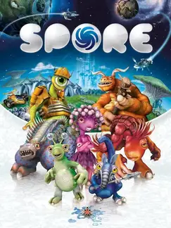

 |
|
| Tiempo de juego | 15m 0s |
| Última actividad | 22/1/2026 18:27:40 |
| Añadido | 22/9/2025 11:20:13 |
| Modificado | 3/12/2025 11:55:06 |
| Estado de finalización | Jugado |
| Librería | Playnite |
| Fuente | |
| Plataforma | PC (Windows) |
| Fecha de lanzamiento | 4/9/2008 |
| Puntuación de la Comunidad | 73 |
| Puntuación de la Crítica | 82 |
| Puntuación de usuario | |
| Género | Adventure Real Time Strategy (RTS) Role-playing (RPG) Simulator Strategy |
| Desarrollador | Maxis |
| Editor | Electronic Arts |
| Característica | Single Player |
| Enlaces | Steam Official Website |
| Tag | Texto en Español |
Pocos juegos se han atrevido a ser tan zarpadamente ambiciosos como Spore. La idea de Will Wright, el genio detrás de The Sims, no era hacer un juego, era hacer cinco juegos en uno: un simulador de vida que te lleva desde una bacteria en un charco hasta un imperio que conquista la galaxia. Una locura total que solo podía nacer en la época dorada de Maxis.
El viaje es la posta del juego. Arrancás como un bicho unicelular en un minijuego 2D. Evolucionás, salís a la tierra y se convierte en una aventura de acción en tercera persona donde definís si tu especie va a ser carnívora o herbívora. Formás una tribu y pasa a ser un RTS simple. Creás una civilización y se vuelve un Civilization light. Y finalmente, te subís a un plato volador y se transforma en un sandbox espacial. Ningún otro juego te da un viaje evolutivo así.
Pero el verdadero corazón de Spore, la herramienta que lo hizo inmortal, es su editor de criaturas. Es una caja de LEGOs biológicos donde podés crear el bicho que se te cante, desde un monstruo adorable hasta una pesadilla con diecisiete ojos y tres culos. Cada parte que le ponés afecta cómo se mueve, canta y pelea. La creatividad que te permite es casi infinita.
La "Complete Edition" te trae el paquete full, incluyendo la expansión fundamental: "Galactic Adventures". Le agrega una capa de profundidad zarpada a la etapa espacial, permitiéndote bajar a los planetas con tu capitán y jugar en aventuras creadas por otros usuarios, o incluso diseñar las tuyas propias. Es un "Spore-Maker" que expande la vida del juego hasta el infinito.
Spore es un experimento fascinante, quizás no tan profundo en cada una de sus etapas como se prometió, pero sí inigualable en su ambición y escala. Es un tributo a la creatividad, un arenero de posibilidades que te invita a dejar tu propia marca en un universo digital, desde el ADN hasta las estrellas.